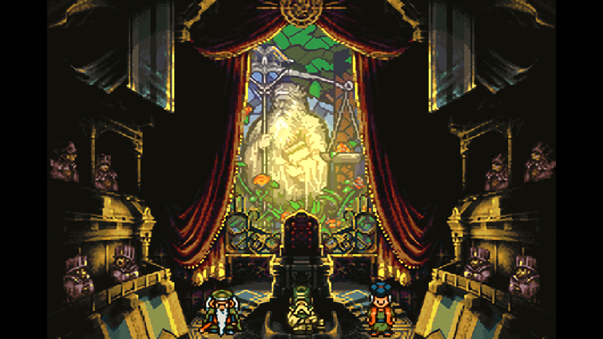
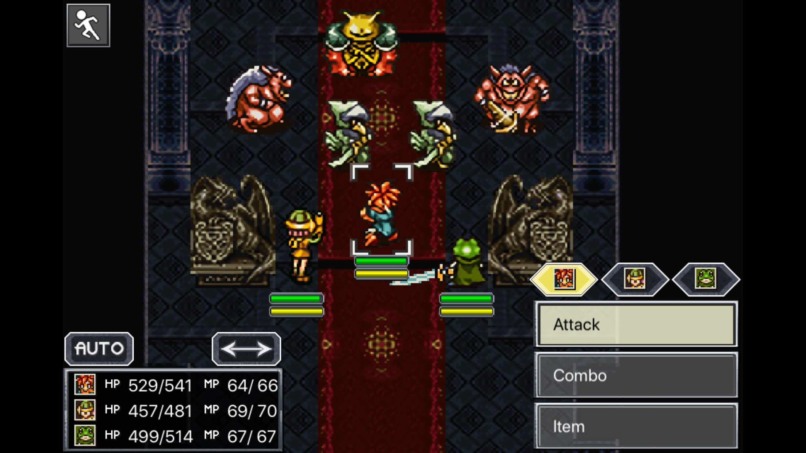
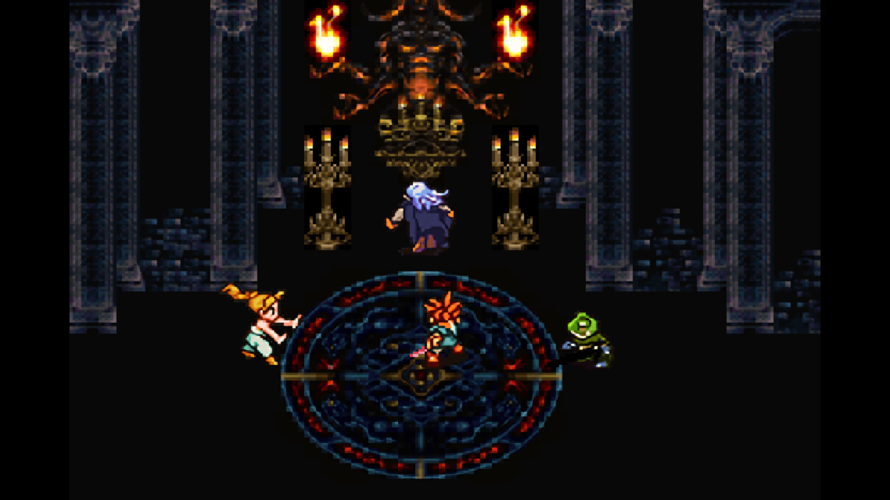

Viaje ao passado esquecido, ao futuro distante e até mesmo ao Fim dos Tempos em uma jornada para salvar o destino do planeta.
SAIBA MAISCHRONO TRIGGER
Chrono Trigger é um clássico RPG desenvolvido pelo chamado Dream Team, formado por Yuji Horii, criador de Dragon Quest, Akira Toriyama, criador de Dragon Ball, e pelos criadores de Final Fantasy.
A aventura acompanha Crono, um jovem que conhece Marle durante a Feira Milenar de Guardia. Após um acidente envolvendo o Telepod, uma invenção de Lucca, Marle desaparece através de uma fenda dimensional. Crono decide segui-la e acaba viajando para diferentes períodos da história.
Entre a pré-história, a Idade Média, o presente, o futuro e o próprio Fim dos Tempos, Crono e seus companheiros precisam enfrentar desafios e descobrir os segredos que podem decidir o futuro do planeta.
GÊNERO
RPG, Aventura
AMBIENTAÇÃO
Diferentes eras da história
PLATAFORMAS
PC, Android, iOS, SNES, Nintendo DS e PlayStation
CLASSIFICAÇÃO
UMA EXPERIÊNCIA MARCANTE
Chrono Trigger foi o segundo jogo mais vendido de 1995 no Japão e, considerando suas diferentes versões, ultrapassou a marca de 5 milhões de cópias enviadas mundialmente.
Chrono Trigger foi desenvolvido por um grupo de grandes nomes da indústria, conhecido como “Dream Team”. Entre eles estavam Hironobu Sakaguchi, criador de Final Fantasy, Yuji Horii, criador de Dragon Quest, e Akira Toriyama, designer de personagens de Dragon Quest e autor de Dragon Ball.
Desde seu lançamento, Chrono Trigger conquistou sucesso comercial e reconhecimento da crítica. O jogo é considerado um dos grandes títulos da quarta geração de consoles, destacando-se por seus múltiplos finais, missões secundárias, sistema de batalha e gráficos detalhados.
A trilha sonora de Chrono Trigger foi composta por Yasunori Mitsuda, com a participação de Nobuo Uematsu, veterano compositor da série Final Fantasy. As músicas do jogo são consideradas entre as mais marcantes da história dos videogames.
EXPLORE O UNIVERSO


